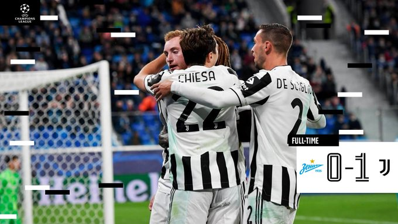

Un gol de Kulusevski en los minutos finales hace que los de Allegri sigan con su buena racha
El Zenit y la Juventus se medían en San Petersburgo en un choque interesante para ver como quedaba la clasificación del Grupo H sabiendo que el Chelsea tenía un choque asequible ante el Malmo en Inglaterra. La Juve consiguió vencer por la mínima tras un gol de Kulusevski en el minuto 86 y salió viva de Rusia.
